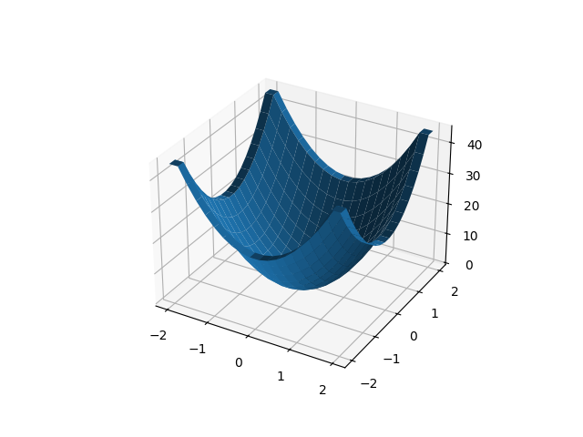

Elimizde iki türlü fonksiyon olabilir, ya skalar (tek sayı) fonksiyonu, ya da vektör fonksiyonu. Bu fonksiyonların skalar alan (scalar field) ve vector alanı (vector field) oluşturduğu söylenebilir. Alan tarifi fonksiyonların çıktısı ile alakalıdır, eğer fonksiyon çok boyutlu girdi alıp tek boyut (tek sayı) donduruyorsa skalar alan, çok boyutlu vektör döndürüyorsa vektör alanı tanımlıyor demektir.
Mesela bir skalar alan $f(x,y,z)$ fonksiyonu ile tanımlanıyor olabilir, ve $f(x,y,z) = 2y^3 + 4 xz + 3x$ olabilir.
Skalar alanın gradyanı bir vektördür,
$$ \nabla f = \left[ \frac{\partial f}{\partial x}, \frac{\partial f}{\partial y}, \frac{\partial f}{\partial z} \right] $$
Vektör fonksiyonu çok boyutlu sonuç döndürür. Bir vektör fonksiyonunu $f = \vec{f}(x,y,z)$ düşünebiliriz.
Skalar alanın gradyanı bir vektör alanı tanımlar. Her farklı $x,y,z$ değeri için bir vektör sonucu alıyoruz.
Vektör fonksiyonu
$$ f = \left[\begin{array}{r} f_1(x,y,z) \\ f_2(x,y,z) \\ f_3(x,y,z) \end{array}\right] $$
ile tanımlanabilir.
Örnek olarak
$$ U(x,y) = \frac{1}{3} (x^4 + y^4) \qquad (1) $$
alalım,
from mpl_toolkits.mplot3d import Axes3D
fig = plt.figure()
ax = fig.add_subplot(111, projection='3d')
xx = np.linspace(-5.0,5.0,20)
yy = np.linspace(-5.0,5.0,20)
x,y = np.meshgrid(xx,yy);
U = 1/3*( (x**4) + (y**4))
ax.plot_surface(x,y,U)
plt.savefig('calc_multi_70_div_curl_lap_01.png')
Gradyanı analitik olarak bulabiliriz,
$$ \nabla U = \frac{4}{3} [\begin{array}{cc} x^3 & y^3 \end{array}]^T $$
Gradyan vektör alanı şöyle [6],
u, v = 4/3*x**3, 4/3*y**3
fig, ax = plt.subplots()
ax.quiver(x,y,u,v)
ax.xaxis.set_ticks([])
ax.yaxis.set_ticks([])
ax.axis([-6, 6, -6, 6])
ax.set_aspect('equal')
plt.savefig('calc_multi_70_div_curl_lap_03.png')

Üstte analitik sonucu grafikledik. Gradyanı pür sayısal olarak
hesaplayabilirdik, bu fonksiyon yaklaşık türev hesabını üç boyut için yapıyor,
gradient çağrısını kullanıyoruz,
uu,vv = np.gradient(U)
fig, ax = plt.subplots()
ax.quiver(x,y,vv,uu)
ax.xaxis.set_ticks([])
ax.yaxis.set_ticks([])
ax.axis([-6, 6, -6, 6])
ax.set_aspect('equal')
plt.savefig('calc_multi_70_div_curl_lap_04.png')

Benzer bir sonuç elde ettik.
Uzaklaşım (divergence)
Bu hesap $\mathrm{div} f$, ya da $\nabla \cdot f$ ile gösterilir. Vektör alanı uzaklaşımı,
$$ \mathrm{div} f = \left( \frac{\partial f_1}{\partial x} + \frac{\partial f_2}{\partial y} + \frac{\partial f_3}{\partial z} \right) $$
Gradyan $\nabla$ işareti görülüyor [4, sf. 403], fakat bu notasyonel bir rahatlık sadece.
$$ \nabla \cdot f = \left( \frac{\partial }{\partial x}, \frac{\partial }{\partial y}, \frac{\partial }{\partial z} \right) \cdot \left[ f_1, f_2, f_3 \right] $$
\left( \frac{\partial }{\partial x} \right)(f_1) + \left( \frac{\partial }{\partial y} \right)(f_2) + \left( \frac{\partial }{\partial z} \right)(f_3) $$
\frac{\partial f_1}{\partial x} + \frac{\partial f_2}{\partial y} + \frac{\partial f_3}{\partial z} $$
Uzaklaşımın fiziksel yorumu bir vektör alanındaki ufak bir yüzeyde görülen akış (flux) olabilir.
Onu bir vektör alanının genişleme ya da küçülme oranı olarak ta görebiliriz.
Laplasyan (Laplacian)
Diyelim ki $f$ skalar alanı iki kez türevi alınabilir halde. O zaman $f$'nin gradyanı $\nabla f$ de türevi alınabilir bir vektör alanıdır, ve onun da uzaklaşımı hesaplanabilir, ve böylece bir tane daha skalar alan daha elde edilebilir [3, sf. 56]. Bu skalar alan, $\nabla \cdot \nabla f$ sonucuna $f$'nin Laplasyanı ismi verilir, ve kendi sembolü de vardır $\nabla^2 f$.
Reel değerli bir fonksiyon $f(x,y,z)$ için [1, sf. 178], $f$'nin gradyani bir vektör alanı, ve onun uzaklaşımını alıyoruz,
$$ \mathrm{div} \nabla f = \nabla \cdot \nabla = \nabla^2 f = \left( \frac{\partial }{\partial x}, \frac{\partial }{\partial y}, \frac{\partial }{\partial z} \right) \cdot \left( \frac{\partial f}{\partial x}, \frac{\partial f}{\partial y}, \frac{\partial f}{\partial z} \right) $$
$$ = \frac{\partial }{\partial x}\left(\frac{\partial f}{\partial x}\right)+ \frac{\partial }{\partial y}\left(\frac{\partial f}{\partial y}\right)+ \frac{\partial }{\partial z}\left(\frac{\partial f}{\partial z}\right) $$
\frac{\partial^2 f}{\partial x^2} + \frac{\partial^2 f}{\partial y^2} + \frac{\partial^2 f}{\partial z^2} $$
Kabaca bir tarif olarak gradyan vektörlerinin en yüksek değerlere sahip olduğu yerler değişimin en çok olduğu yönlere değil mi? Bir tepe altından tepe yönüne doğru, tepe noktasında çok yüksek değerler vardır, altta daha alçak değerler, gradyan yukarıya gösterir. Bu gradyan alanını üzerinde uzaklaşım hesaplayınca alanın her noktası için sayısal bir akış sayısı hesaplamış oluruz. "Gradyan akışının en yüksek olduğu yerler" bulunmuş oluyor. Laplasyan hesabı bu sebeple averajdan sapmanın en fazla olduğu noktaları mdoellemek için kullanılır.
Üstte bir operatör tanımlamış olduk, bu operatör bazen $(\mathcal{L})(x,y,..)$ ile de gösterilebilir, mesela iki boyut için
$$ (\mathcal{L})(x,y) = \frac{\partial^2 }{\partial x^2} + \frac{\partial^2 }{\partial y^2} $$
Sayısal olarak Laplasyan hesabını görelim.
Örnek
Analitik olarak biliyoruz ki (1)'in Laplasyanı
$$ \nabla^2 U(x,y) = 4 x^2 + 4 y^2 $$
foksiyonuna eşit. Bakalım sayısal olarak yaklaşık olarak aynı sonucu alabilecek
miyiz? Burada del2 çağrısı var (iyi isim, çünkü $\nabla$ işaretine 'del'
denir, 'del2' ile onun karesi çağrıştırılıyor),
import numpy as np
def del2(M):
dx = 1
dy = 1
rows, cols = M.shape
dx = dx * np.ones ((1, cols - 1))
dy = dy * np.ones ((rows-1, 1))
mr, mc = M.shape
D = np.zeros ((mr, mc))
if (mr >= 3):
## x direction
## left and right boundary
D[:, 0] = (M[:, 0] - 2 * M[:, 1] + M[:, 2]) / (dx[:,0] * dx[:,1])
D[:, mc-1] = (M[:, mc - 3] - 2 * M[:, mc - 2] + M[:, mc-1]) \
/ (dx[:,mc - 3] * dx[:,mc - 2])
## interior points
tmp1 = D[:, 1:mc - 1]
tmp2 = (M[:, 2:mc] - 2 * M[:, 1:mc - 1] + M[:, 0:mc - 2])
tmp3 = np.kron (dx[:,0:mc -2] * dx[:,1:mc - 1], np.ones ((mr, 1)))
D[:, 1:mc - 1] = tmp1 + tmp2 / tmp3
if (mr >= 3):
## y direction
## top and bottom boundary
D[0, :] = D[0,:] + \
(M[0, :] - 2 * M[1, :] + M[2, :] ) / (dy[0,:] * dy[1,:])
D[mr-1, :] = D[mr-1, :] \
+ (M[mr-3,:] - 2 * M[mr-2, :] + M[mr-1, :]) \
/ (dy[mr-3,:] * dx[:,mr-2])
## interior points
tmp1 = D[1:mr-1, :]
tmp2 = (M[2:mr, :] - 2 * M[1:mr - 1, :] + M[0:mr-2, :])
tmp3 = np.kron (dy[0:mr-2,:] * dy[1:mr-1,:], np.ones ((1, mc)))
D[1:mr-1, :] = tmp1 + tmp2 / tmp3
return D / 4
Ayrıksal Laplasyanini grafiklersek,
from del2 import del2
L = 4*del2(U);
fig = plt.figure()
ax = fig.add_subplot(111, projection='3d')
ax.plot_surface(x,y,L)
plt.savefig('calc_multi_70_div_curl_lap_02.png')

Evet, üst sağdaki resim $4 x^2 + 4 y^2$ gibi duruyor [5].
Curl, $\nabla$
Curl hesabını $\nabla$ bazında yapabilir miyiz? Evet,
$$ \mathrm{curl} f = \nabla \times f $$
Bu nasıl oldu [1, sf. 178]?
$$ = \left( \frac{\partial }{\partial x}, \frac{\partial }{\partial y}, \frac{\partial }{\partial z} \right) \times \left[\begin{array}{r} f_1(x,y,z) \\ f_2(x,y,z) \\ f_3(x,y,z) \end{array}\right] $$
$$ = \left[\begin{array}{ccc} i & j & k \\ \frac{\partial }{\partial x} & \frac{\partial }{\partial y} & \frac{\partial }{\partial z} \\ f_1 & f_2 & f_3 \end{array}\right] $$
$$ = \left[\begin{array}{ccc} \frac{\partial f_3}{\partial y} - \frac{\partial f_2}{\partial z} & \frac{\partial f_1}{\partial z} - \frac{\partial f_3}{\partial x} & \frac{\partial f_2}{\partial x} - \frac{\partial f_1}{\partial y} \end{array}\right] $$
Kaynaklar
[1] Corral, Vector Calculus
[2] 3Blue1Brown, Uzaklaşım (Divergence) ve Curl, Maxwell Denklemlerinin Dili, https://www.youtube.com/watch?v=8kX2f2olQao
[3] Matthews, Vector Calculus
[4] Kreyszig, Advanced Engineering Mathematics 10th Ed
[5] Mathworks del2, https://www.mathworks.com/help/matlab/ref/del2.html#bt1j8dn-5
[6] Kazarinoff, https://pythonforundergradengineers.com/quiver-plot-with-matplotlib-and-jupyter-notebooks.html